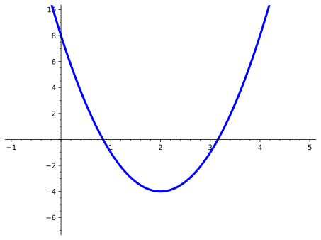
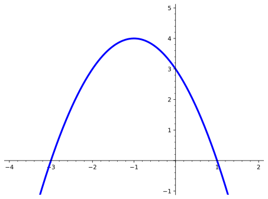
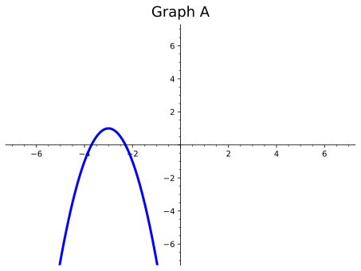

Graph quadratic functions and identify their axis of symmetry, and maximum or minimum point.
Subsection1.1.1Activities
Observation1.1.1.
Quadratic functions have many different applications in the real world. For example, say we want to identify a point at which the maximum profit or minimum cost occurs. Before we can interpret some of these situations, however, we will first need to understand how to read the graphs of quadratic functions to locate these least and greatest values.
Activity1.1.2.
Use the graph of the quadratic function \(f(x)=3(x-2)^2-4\) to answer the questions below.

Figure1.1.3.
(a)
Make a table for values of \(f(x) \) corresponding to the given \(x \)-values. What is happening to the \(y\)-values as the \(x\)-values increase? Do you notice any other patterns of the \(y\)-values of the table?
Table1.1.4.
\(x\)
\(f(x)\)
-2
-1
0
1
2
3
4
5
(b)
At which point \((x,y)\) does \(f(x) \) have a minimum value? That is, is there a point on the graph that is lower than all other points?
The minimum value appears to occur near \((0, 8) \text{.}\)
The minimum value appears to occur near \((-\frac {1}{5}, 10) \text{.}\)
The minimum value appears to occur near \((2, -4) \text{.}\)
There is no minimum value of this function.
(c)
At which point \((x,y)\) does \(f(x) \) have a maximum value? That is, is there a point on the graph that is higher than all other points?
The maximum value appears to occur near \((-2, 44) \text{.}\)
The maximum value appears to occur near \((-\frac {1}{5}, 10) \text{.}\)
The maximum value appears to occur near \((2, -4) \text{.}\)
There is no maximum value of this function.
Definition1.1.5.
The vertex form of a quadratic function is given by \(f(x)=a(x-h)^2+k\text{,}\) where \((h, k)\) is the vertex of the parabola and \(x = h\) is the axis of symmetry.
Activity1.1.6.
Use the given the quadratic function, \(f(x)=3(x-2)^2-4\text{,}\) to answer the following:
(a)
Applying Definition 1.1.5, what is the vertex and axis of symmetry of \(f(x)\text{?}\)
vertex: \((2,-4)\text{;}\) axis of symmetry: \(x=2\)
vertex: \((-2,4)\text{;}\) axis of symmetry: \(x=-2\)
vertex: \((-2,-4)\text{;}\) axis of symmetry: \(x=-2\)
vertex: \((2,4)\text{;}\) axis of symmetry: \(x=2\)
(b)
Compare what you got in part \(a\) with the values you found in Activity 1.1.2. What do you notice?
Definition1.1.7.
Given the standard form of a quadratic function, \(f(x)=ax^2+bx+c\text{,}\) with real coefficients \(a, b \text{,}\) and \(c \text{,}\) the axis of symmetry is defined as \(x=\frac {-b}{2a}\) and has a vertex at the point \((\frac{-b}{2a},f(\frac{-b}{2a}))\text{.}\)
Activity1.1.8.
Use the graph of the quadratic function to answer the questions below.

Figure1.1.9.
(a)
Which of the following quadratic functions could be the graph shown in the figure?
\(\displaystyle f(x)=x^2+2x+3\)
\(\displaystyle f(x)=-(x+1)^2+4\)
\(\displaystyle f(x)=-x^2-2x+3\)
\(\displaystyle f(x)=(x+1)^2+4\)
(b)
What is the maximum or minimum value?
\(\displaystyle -1\)
\(\displaystyle 4\)
\(\displaystyle -3\)
\(\displaystyle 1\)
Activity1.1.10.
Consider the following four graphs of quadratic functions:

(a)
Which of the graphs above have a maximum?
Graph A
Graph B
Graph C
Graph D
(b)
Which of the graphs above have a minimum?
Graph A
Graph B
Graph C
Graph D
(c)
Which of the graphs above have an axis of symmetry at \(x=2\text{?}\)
Graph A
Graph B
Graph C
Graph D
(d)
Which of the graphs above represents the function \(f(x)=-(x-2)^2+4\text{?}\)
Graph A
Graph B
Graph C
Graph D
(e)
Which of the graphs above represents the function \(f(x)=x^2-4x+1\text{?}\)
Graph A
Graph B
Graph C
Graph D
Remark1.1.11.
Notice that the maximum or minimum value of the quadratic function is the vertex. How can you determine if the vertex is a maximum or minimum?
Activity1.1.12.
A function \(f(x)\) has a maximum value at 7 and its axis of symmetry at \(x=-2\text{.}\)
(a)
Sketch a graph of a function that meets the criteria for \(f(x)\text{.}\)
(b)
Was your graph the only possible answer? Try to sketch another graph that meets this criteria.
Remark1.1.13.
Other points, such as zeros (i.e., \(x\)-intercepts), may be helpful in sketching a more accurate graph of a quadratic function.
Activity1.1.14.
Consider the following two quadratic functions \(f(x)=x^2-4x+12\) and \(g(x)=2x^2+8x-10\) and answer the following questions:
(a)
Applying Definition 1.1.7, what is the vertex and axis of symmetry of \(f(x)\text{?}\)
vertex: \((2,-16)\text{;}\) axis of symmetry: \(x=2\)
vertex: \((-2,16)\text{;}\) axis of symmetry: \(x=-2\)
vertex: \((-2,-16)\text{;}\) axis of symmetry: \(x=-2\)
vertex: \((2,16)\text{;}\) axis of symmetry: \(x=2\)
(b)
Applying Definition 1.1.7, what is the vertex and axis of symmetry of \(g(x)\text{?}\)
vertex: \((2,-16)\text{;}\) axis of symmetry: \(x=2\)
vertex: \((-2,16)\text{;}\) axis of symmetry: \(x=-2\)
vertex: \((-2,-16)\text{;}\) axis of symmetry: \(x=-2\)
vertex: \((2,16)\text{;}\) axis of symmetry: \(x=2\)
(c)
What do you notice about \(f(x)\) and \(g(x)\text{?}\)
(d)
Now graph both \(f(x)\) and \(g(x)\) and draw a sketch of each graph on one coordinate plane. How are they similar/different?
Subsection1.1.2Videos
It would be great to include videos down here, like in the Calculus book!